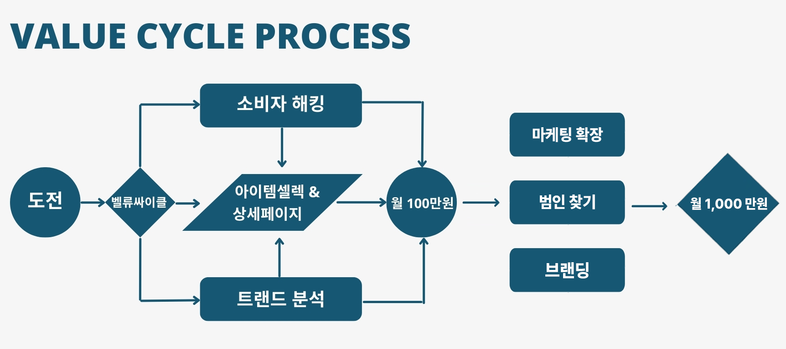

벨류싸이클 1단계, 구매욕구 해킹
분석하려는 아이템:
사용자 ID
주 타겟의 성별:
성별을 선택하세요
남성
여성
남성&여성 비슷
주 타겟의 연령대:
연령대를 선택하세요
20대
30대
40대~50대
1페이지 트렌드 3가지:
벨류싸이클 해킹하기
질문 예시:
트렌드 3개를 적을때는 전체적으로 보이는
3가지 특징을 적어주면 됩니다.
EX)전반적으로 고급스러운 느낌이 나고
가죽이거나 패브릭상품이 많아.

금지된 단어가 포함되어 있습니다.
초기화 - 처음화면으로 돌아갑니다.
오래 기다리셨습니다. 드디어 소비자의 구매욕구를 벨류해킹에 성공했습니다.
1. 첫 번째 이유:
애완견에 대한 애정 소비자들이 귀여운 강아지 카시트를 구매하는 가장 큰 이유는 자신의 애완견에 대한 애정 때문입니다. 강아지를 가족처럼 생각하는 소비자들은 강아지의 편안함을 위해 푹신푿한 카시트를 선택하게 됩니다.
2. 두 번째 이유:
안전성 확보 강아지 카시트는 강아지를 안전하게 운반할 수 있는 도구로, 강아지의 안전을 위해 반드시 필요한 아이템입니다. 따라서, 소비자들은 강아지의 안전을 위해 카시트를 구매할 수밖에 없는 상황이 됩니다.
3. 세 번째 이유:
감성적 만족감 귀여운 디자인의 강아지 카시트는 소비자에게 감성적인 만족감을 제공합니다. 이는 강아지를 사랑하는 마음을 표현하는 방법 중 하나로, 이를 통해 소비자는 강아지에 대한 사랑을 더욱 드러내게 됩니다.
4. 네 번째 이유:
분위기 생성 귀여운 강아지 카시트는 자동차 내부의 분위기를 한층 더 향상시킵니다. 이는 소비자가 자신의 감성과 스타일을 표현하는 수단이기도 하며, 이를 통해 자신만의 공간을 만들어 나가는 즐거움을 느낍니다.
5. 다섯 번째 이유:
경제적 이득 강아지 카시트는 강아지를 안전하게 운반할 수 있게 해주므로, 강아지의 상해나 질병을 예방할 수 있습니다. 이는 결국 소비자에게 경제적인 이득을 제공합니다.
Your browser does not support the video tag.
현재 벨류해킹중입니다. 기존 70분 걸리던 벨류해킹을 1분 안에 처리 중입니다....